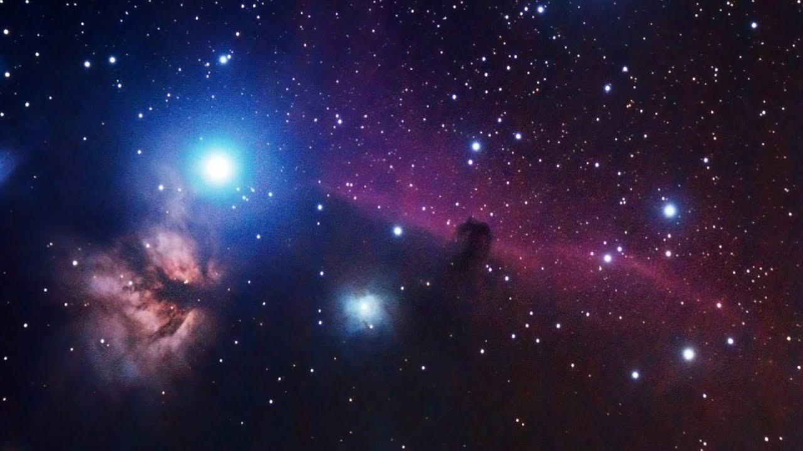

On the Subject of Space
“Who are we? We find that we live on an insignificant planet of a humdrum star lost in a galaxy tucked away in some forgotten corner of a universe in which there are far more galaxies than people.” - Carl Sagan
“SPAAAAAAAAAAAAAAAAAAAAAAAAAAAAAAAAAAAAAACE” - Space Sphere
The module has a space bar on a background of space.
Using the specific image of space, find a space-related quote in the table below.
Press the space bar to begin. Upon doing so, the module will begin to go through the quote, ignoring punctuation, at a speed of one character per tick of the bomb's timer. Press the space bar on each space in the quote.
All quotes are appended with a space. Treat words separated by a dash or a slash as two words i.e. separated by a space.
| That’s one small step for man; one giant leap for mankind. | |
|  | Space is big. Really big. You just won't believe how vastly, hugely, mind-bogglingly big it is. I mean, you may think it’s a long way down the road to the chemist, but that’s just peanuts to space. |
 |
Who are we? We find that we live on an insignificant planet of a humdrum star lost in a galaxy tucked away in some forgotten corner of a universe in which there are far more galaxies than people. |